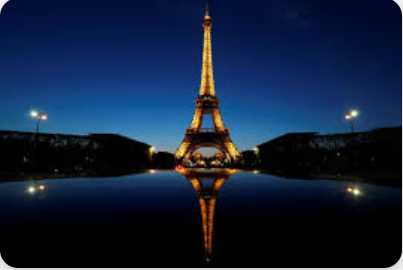
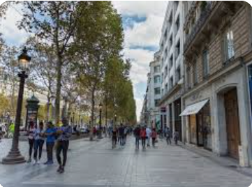

Paris

French culture is most commonly associated with Paris, which is a center of fashion, cuisine, art and architecture, but life outside of the City of Lights is very different and varies by region. France doesn't just have culture; the word "culture" is actually French
Cultural life
With a strong influence from the west, paris has always had a more contemporary mindset. Their rich heritage culture has not been tarnished by the rapid industrialization that has become commonplace in the rest of India yet. Celebrating livelihood and religious festivals with scrumptious food and delightful music, the locals are humble, warm and fun-loving individuals.
Popular cuisines
- . Croissants: Cheap, yet unforgettable
- . Chicken Cafreal
- .Goan Pork Vindaloo
- . Chicken Xacuti
you wanna live like a local
join us
meet sano, our local host
local host name : sano
local host number:0000000000Pictures from our happy clients
